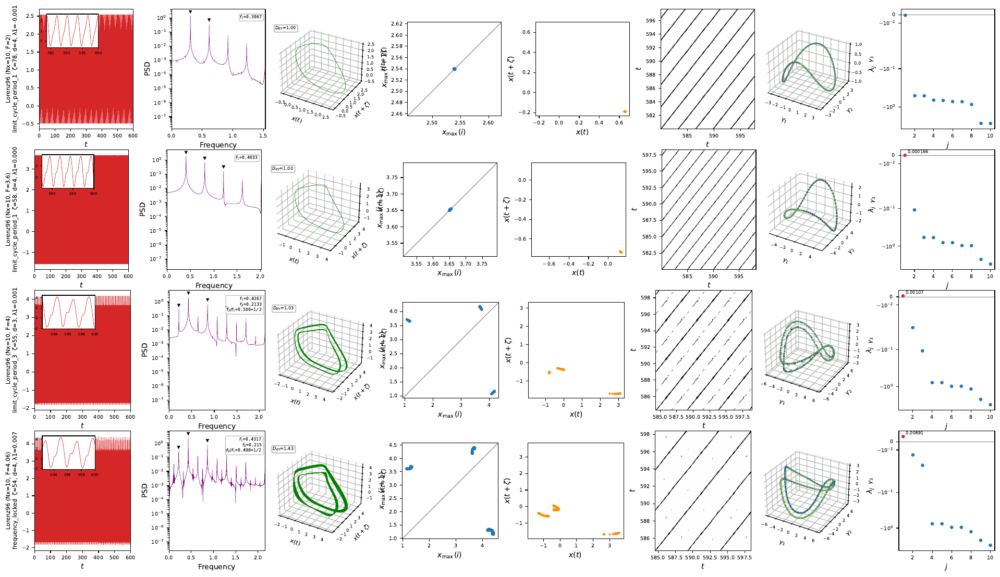
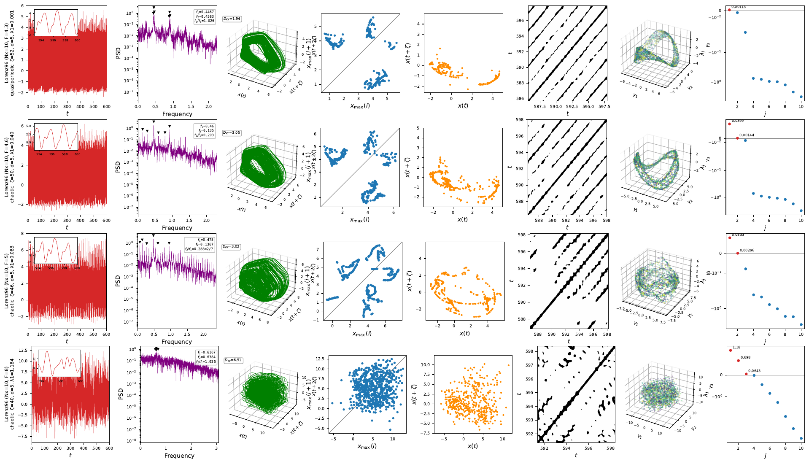

Worked example: torus dimensions along a Ruelle–Takens–Newhouse route
The torus dimension T^k is read off three independent witnesses: the number of neutral Lyapunov exponents (k zeros: limit cycle 1, 2-torus 2, 3-torus 3 — chaos has a positive one instead), the correlation dimension \(D_2\) of the attractor (\(\approx\) k, fractal for chaos) and of the plane-crossing Poincaré section (\(\approx\) k-1: dots \(\to\) loop \(\to\) band). Measured on Lorenz-96 (Nx=10), the route is textbook RTN, with locking windows interleaving near the breakdown and no stable 3-torus (as RTN predicts — \(T^3\) is generically unstable and the attractor turns strange directly):
| F | \(\lambda\) signature (\(n_0\) = neutrals) | \(D_2\) state / section | regime |
|---|---|---|---|
| 2–3.95 | one zero | 1.05 / — | limit cycle (\(T^1\)) |
| 4.0–4.06 | one zero | — | locked windows (periodic on the torus) |
| 4.2–4.4 | two zeros | 1.8 / 0.9 | quasiperiodic (\(T^2\)) |
| 4.45 | \(\lambda_1 = 0.016\), \(n_0\)=2 | 2.0 / 1.0 | first chaos, interleaved with... |
| 4.5–4.55 | two zeros | 2.1–2.2 / 1.0 | ...re-locked/QP windows (Arnold tongues) |
| 4.6 | \(\lambda_1 = 0.039\) (converged) | 2.15 / 1.02 | chaotic wrinkled torus — section still loop-like |
| 5 | \(\lambda_1 = 0.07\) (plateau, \(\lambda_1 T\) grows) | 2.9 / 1.1 | chaos on a thickened torus remnant |
| 8 | 3 positive exponents | 4.8 / 1.8 | developed chaos (\(D_\mathrm{KY} \approx 6.5\)) |
This is why F=4.6 and F=5 "look QP": the strange attractor inherits the torus geometry (\(D_2\) barely above 2, section barely above a loop) while the dynamics on it are already exponentially divergent — the spectrum, not the geometry, makes the call.
The route in the 8-panel diagnostics
Generated with python -m ntsa.characterize --model lorenz96 --param F --values ...
(Nx = 10). On the torus side of the route, the delay portrait fills a surface, the
Poincaré section closes into a loop, and the spectrum shows two neutral exponents;
past breakdown the section stays loop-like long after \(\lambda_1\) turns positive.
F = 2 \(\to\) 4.06 — limit cycles and locking. Period-1 orbits (\(D_\mathrm{KY}\) = 1, single return-map cluster), then a period-3 window at F = 4 and a locked state at F = 4.06 (\(f_2/f_1 \approx\) 1/2, \(D_\mathrm{KY}\) = 1.43):

F = 4.3 \(\to\) 8 — torus, breakdown, developed chaos. The 2-torus at F = 4.3 (quasiperiodic, \(D_\mathrm{KY}\) = 1.94, loop-shaped section), the wrinkled-torus chaos at F = 4.6 (\(\lambda_1\) = 0.040) and F = 5 (\(\lambda_1\) = 0.083) where the section still looks like a thickened loop, and developed chaos at F = 8 (three positive exponents, \(D_\mathrm{KY}\) = 6.51):
